과일진열쇼케이스
과일가게 오픈 체크리스트, 설비 들이기 전 꼭 볼 항목
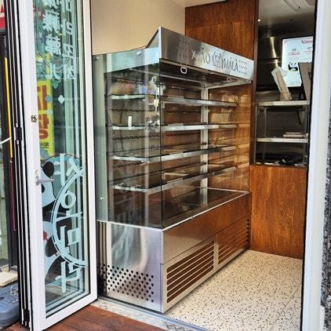
과일가게 오픈 전에는 과일쇼케이스를 오픈형으로 할지 도어형으로 할지, 습도를 어떻게 관리할지, 매장 어디에 둘지를 먼저 정해야 합니다. 이 세 가지가 정해져야 규격과 조명, 선반 구성이 따라오고, 오픈 후 무름과 폐기를 줄일 수 있습니다.
안녕하세요. 과일 가게와 프루트샵의 진열 냉장 설비를 맞춤으로 만드는 한성쇼케이스입니다.
과일가게 오픈 날짜가 잡히면 할 일이 한꺼번에 몰립니다. 거래처, 간판, 포장재까지 챙기다 보면 정작 매일 과일을 지켜 줄 쇼케이스는 "시원하면 되겠지" 하고 마지막에 급하게 고르시는 경우가 많습니다.
그런데 과일은 수확한 뒤에도 숨을 쉬는 상품이라, 온도만큼 습도와 진열 방식에 따라 무르는 속도가 달라집니다.
오픈 첫 주부터 복숭아나 딸기가 하루 만에 물러 버리면 손님 신뢰를 얻기 어렵습니다.
오늘은 과일가게 오픈 전에 설비 쪽에서 점검해야 할 항목을 순서대로 정리해 드리겠습니다. 인테리어 업체와 회의하실 때 이 목록을 옆에 두고 보셔도 좋습니다.
1. 오픈형과 도어형부터 정하기
손님이 바구니나 팩을 바로 집어 드는 동네 과일가게라면 문 없는 오픈형이 회전에 유리합니다. 손님은 유리문 하나 여는 것도 번거로워하기 때문에, 손이 바로 닿는 구조가 구매로 이어지기 쉽습니다.
반면 컷팅 과일이나 선물용 고급 과일처럼 온도 변화에 예민하고 오래 진열하는 품목은 냉기를 잡아 두는 도어형이 손실을 줄입니다.
한 매장 안에서도 낱개 판매 구역은 오픈형, 컷팅·선물 구역은 도어형으로 나누는 방법이 있습니다.
- 판매 품목을 낱개·팩·컷팅·선물용으로 나눠 적어 보세요.
- 구역별로 오픈형과 도어형 중 무엇이 맞을지 정해 보세요.
2. 습도 관리 방식 확인
과일쇼케이스에서 자주 놓치는 부분이 습도입니다. 너무 습하면 표면에 물기가 맺혀 조직이 무르고, 너무 건조하면 수분이 빠져 쭈글쭈글해지고 윤기가 사라집니다.
손님은 이런 변화를 보고 바로 오래된 과일이라고 느낍니다.
문 없는 오픈형은 매장 습도의 영향을 그대로 받으니, 에어컨 바람이 쇼케이스 정면으로 들이치지 않는 자리인지 꼭 보셔야 합니다.
바람이 직접 닿으면 과일 표면이 마르고 앞쪽 결로도 심해집니다.
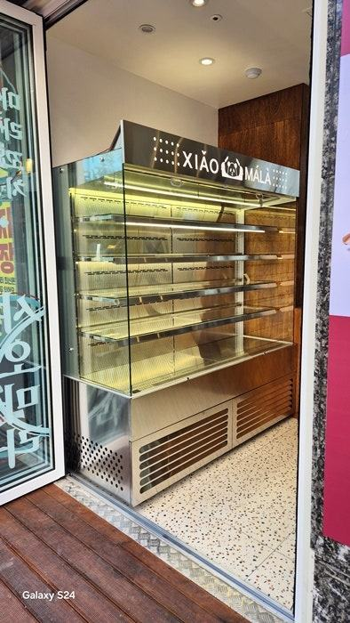
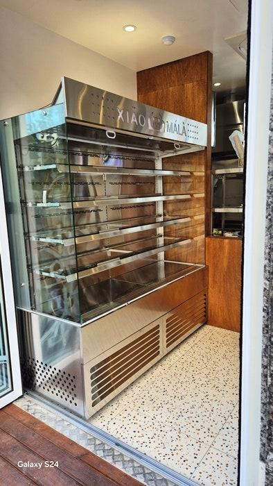
3. 진열 높이와 조명
과일은 색이 곧 상품입니다. 사과와 귤처럼 쌓아 두는 과일, 포도와 딸기처럼 팩으로 세우는 과일, 수박처럼 크고 무거운 과일의 진열 높이가 모두 다르니 선반 단수와 간격을 품목에 맞춰야 합니다.
조명 색도 과일 색에 맞춰 골라 보세요. 진열 품목을 미리 알려 주시면 선반 경사, 단수, 조명 색을 함께 맞춰 드립니다.
무거운 과일을 올릴 하단은 받침 강도도 확인하셔야 합니다.
- 품목별 진열 높이와 무게를 적어 두세요.
- 하단 선반에 무거운 과일을 올릴지 정해 두세요.
4. 설치 자리와 오픈 일정
출입구 쪽 햇볕이 드는 자리는 눈에 잘 띄지만 과일이 쉽게 데워집니다. 쇼케이스 뒷면 열 배출 공간, 전원 위치, 물받이 배수 위치를 인테리어 공사 전에 정해 두셔야 바닥과 벽을 다시 손대지 않습니다.
맞춤 제작은 제작 기간이 필요하니 오픈일에서 거꾸로 일정을 잡아 보세요. 반입 경로와 출입문 폭도 함께 확인해 두면 설치 당일이 수월합니다.
설치가 끝나면 오픈 전 며칠은 빈 상태로 가동해 온도가 안정되는지, 앞쪽 바람이 과일에 직접 닿지 않는지 직접 손을 대어 확인해 보세요.
이때 조명 각도와 선반 경사도 실제 과일을 올려 놓고 한 번 더 맞춰 두시면 첫날부터 진열이 깔끔합니다.
체크리스트
- 품목별 오픈형·도어형 구분
- 에어컨 바람과 햇볕이 닿지 않는 자리
- 선반 단수·간격과 하단 받침 강도
- 과일 색에 맞는 조명
- 전원·배수·열 배출 위치
- 오픈일 기준 제작·설치 일정
현장에서 자주 보는 경우: 유행 따라 오픈형을 골랐다가 고민이 생길 때
상담을 하다 보면 요즘 많이 쓴다는 이유로 오픈다단쇼케이스부터 정하시려는 사장님이 계십니다. 회전이 빠르고 손님이 직접 들어 보고 고르는 품목에는 오픈형이 좋은 선택이지만, 문이 없는 만큼 바깥 온도의 영향을 받고 냉각이 더 자주 돌아가야 합니다.
매장 전체가 습하거나 에어컨 바람이 정면으로 들이치는 구조라면 오픈형에서 결로가 심해질 수 있습니다.
그래서 품목 특성과 매장 환경을 먼저 듣고, 오픈형이 맞는지 도어형이 맞는지부터 함께 판단해 드리고 있습니다.
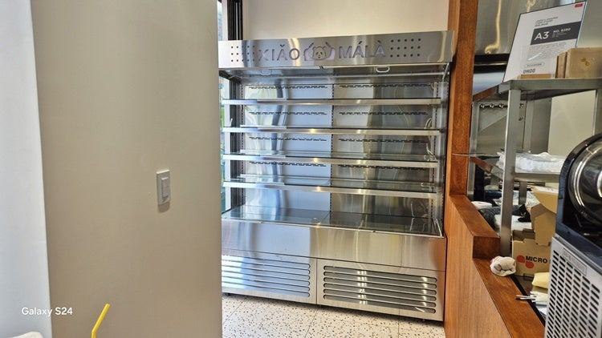
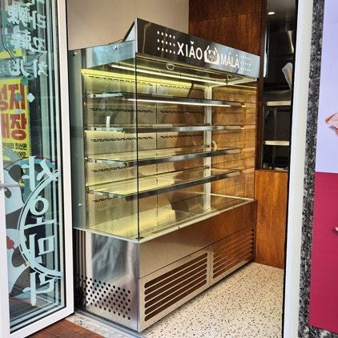
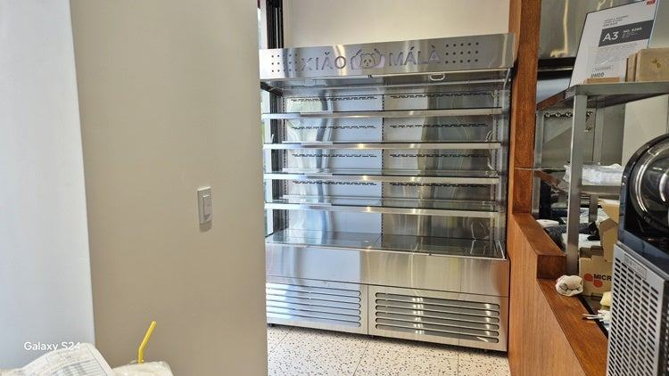
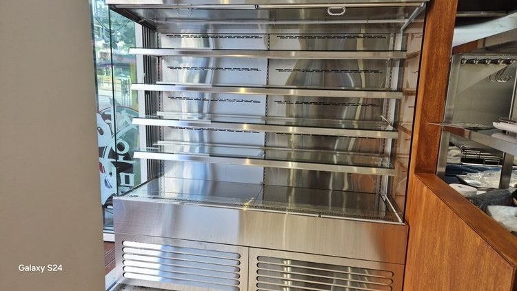
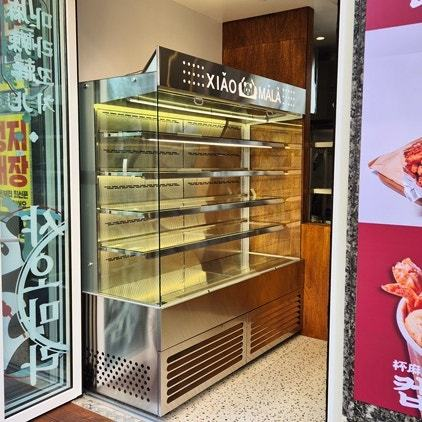
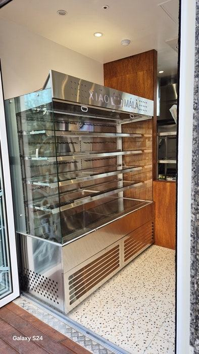
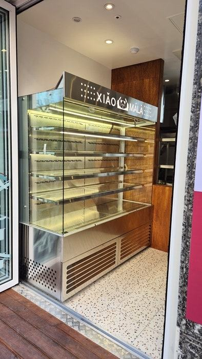

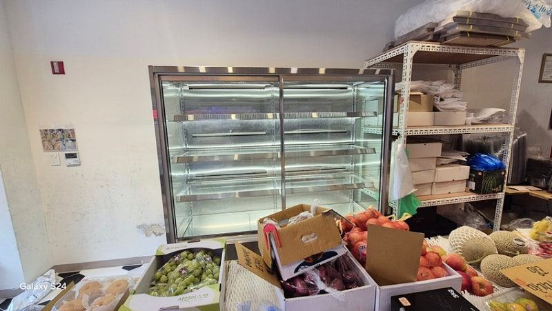

자주 묻는 질문
과일가게는 쇼케이스 한 대로 충분할까요?
판매 품목에 따라 다릅니다. 낱개·팩 위주라면 오픈형 한 대로 시작할 수 있지만, 컷팅 과일을 함께 판다면 도어형 구역을 따로 두시는 편이 관리가 쉽습니다.
오픈형 과일쇼케이스는 밤에 어떻게 관리하나요?
영업 후 나이트커버를 덮어 두면 냉기가 덜 빠지고 과일 표면이 덜 마릅니다. 다음 날 오픈 전에 물기와 무른 과일을 한 번 골라내 주세요.
오픈 후 고장이 나면 어디서 수리하나요?
한성쇼케이스는 전국 240여 개 A/S 센터를 운영하고 있어 지방 매장도 가까운 곳에서 접수하실 수 있습니다.
설치 때 A/S 접수 방법도 함께 안내해 드립니다.
매장 조건에 맞춰 만드는 한성쇼케이스
원하시는 제품 사진과 설치할 공간 사진만 보내 주셔도 매장에 맞는 구성을 추천해 드립니다.
- 전국 240여 개 A/S 전담 센터 운영
- 본사 대량 자재 매입으로 품질 대비 합리적인 가격
- 유럽제·삼성 냉각 콤프레셔 적용
- 국내 최초 쇼케이스 전문 디자이너 상주
매장 폭과 원하는 진열 구성을 알려 주세요. 실측과 견적을 안내해 드립니다.
031-986-2458